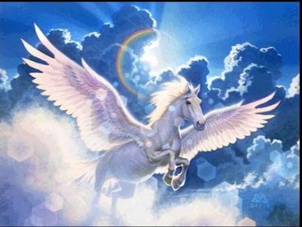

Criaturas Mitológicas
Minotauro
El minotauro era hijo de Pasifae, esposa del rey Minos de Creta y de un toro blanco enviado por Poseidón, dios del mar.
>Minos había ofendido gravemente a Posidón quien como venganza hizo que Pasifae se enamorase del animal. Fruto de dicha unión nació el Minotauro, un ser violento, mitad hombre, mitad toro, que se alimentaba de carne humana.
Para esconder su vergüenza y proteger a su pueblo, el rey Minos rogó al inventor Dédalo que le construyera un laberinto del que el monstruo nunca pudiera salir.
Cada nueve años, a fin de apaciguarlo, Minos le ofrecía la bestia, siete mujeres y siete jóvenes que imponía como tributo a la ciudad de Atenas.
En una ocasión, Teseo se ofreció voluntario como víctima, con la intención de matar al Minotauro y liberar a Atenas de un cruel destino. Con la ayuda de Adriadna, la hija del rey, que se había enamorado de él, logro su propósito: Adriadna le ofrece a Teseo un ovillo de hilo que le ha dado Dédalo, el arquitecto del laberinto.
Habiéndo atado uno de sus extremos en la entrada y siguiendo el hilo por los intrincados vericuetos del laberinto, Teseo puede, efectivamente, encontrar la salida.
Medusa
Las tres hermanas gorgonas, Medusa, Esteno y Euríales, eran las hijas de Forcis y Ceto (en otras ocasiones llamados Tifón y Equidna). Estos dos eran divinidades del mar, y además tenían condición de hermanos.
Las gorgonas eran reconocidas por ser seres horribles que tan sólo con nombrarlas atemorizaban a los mortales. Monstruos sin ningún tipo de piedad que además presentaban formas realmente espantosas, con manos de bronce, grandes colmillos afilados, una alas de oro bastante pesadas (por lo que no podían volar) así como unos penetrantes ojos que emitían una luz capaz de petrificar a todo aquel que los mirara fijamente.
No obstante, según la leyenda, Medusa era la excepción. Era una muchacha normal, con una belleza completamente deslumbrante. Tan bella era que el mismísimo Poseidón quedó completamente prendado de ella, así pues decidió seducirla en un templo dedicado a la diosa Atenea (en algunas versiones esta seducción es más bien una violación en toda regla).
Esto fue tomado por Atenea como una gran ofensa, así pues, decidió descargar toda su ira sobre la pobre Medusa. El castigo que profirió a la profanada muchacha fue convertirse en un ser horrible como sus hermanas. Con la excepción de que además su precioso cabello sería transformado en un matojo de desagradables serpientes.
De este encuentro entre Poseidón y Medusa surgiría un embarazo. Cuando la noticia llegó a Atenea la ira volvió a resurgir, no podía permitir que ese niño naciera y darle con ello otro descendiente a Poseidón, por lo que mandó a Perseo, hijo de Danae y nieto del Rey de Acrisio, a que matara a la Gorgona, pues esta no había adquirido la inmortalidad.
La misión era, sin duda alguna, peligrosa hasta la muerte. Ante tanto peligro Perseo sería obsequiado por parte de Hermes por unas sandalias aladas y un escudo protector capaz de desviar la luz mortal de los ojos de la Gorgona, armas que le serían de mucha ayuda.
El valiente Perseo se dispuso a cortar la cabeza de Medusa, la única forma de matarla y terminar así con ella, pero tras atestar un corte mortal sobre su cuello, nacieron dos hijos, Pegaso y el gigante Crisaor.
Perseo entregó la cabeza a Atenea, la cual fue incorporada en el escudo de la diosa conocido como Égida. Asimismo, la sangre que brotó de la Gorgona fue guardada celosamente por los dioses, pues si bien parte de ella era el veneno más mortal sobre la tierra, la sangre que brotaba de algunas de sus venas era una fuerte poción capaz de resucitar incluso a los muertos.
Cabe destacar que existen otras versiones sobre esta leyenda en las que Medusa sería la encargada de enfadar a Atenea y no Poseidón. En algunas de estas, la muchacha sería una sacerdotisa del templo de Atenea y dejaría a esta en evidencia hablando de la envidia que la Diosa le profería por su belleza.
Pegaso
Pegaso era un caballo alado de la mitología griega. Un animal hermoso y bello que se codeaba con dioses y héroes; y es que Pegaso era el caballo de Zeus, dios soberano sobre todos los dioses, algo que sin duda alguna le otorgaba cierta fama ante los fieles. Por tanto era un caballo de lo más famoso y representado en obras artísticas de la época, siendo durante toda la historia del hombre una figura recurrente junto a otros caballos mágicos como el unicronio.
Su nacimiento tiene algunas lagunas. Lo cierto es que todas las versiones parecen coincidir que nació a raíz de la muerte de una de las Gorgonas, Medusa, la cual terminó abrazando el sueño eterno gracias a Perseo. No obstante, mientras que en unas versiones se asegura que nació del cuello de la Gorgona cuando Perseo la mató en el mar, otros defienden que nació de la tierra, cuando la sangre de Medusa llegó a la misma.
Sea como sea, Pegaso nació y se puso inmediatamente a las órdenes de Zeus al llevarle el rayo.
Muchas veces se habla de que Perseo volaba montado en su lomo, pero lo cierto es que las fuentes nos enseñan que Perseo no necesitaba para ello a Pegaso, pues tenía ya sus sandalias aladas. Aun así, era frecuente verlos juntos representados en obras del renacimiento.
Tiene mucha más relación con Belerofonte, otro héroe clásico; y es que al parecer gracias a Pegaso, este héroe pudo finalmente aniquilar a la Quimera y lograr la victoria sobre las temibles Amazonas.
La mitología griega sigue dándole un papel importante cuando Belerofonte desaparece, así, Pegaso vuelve nuevamente a la morada de los dioses y se pone al servicio de Zeus.
En una ocasión, se organizó el concurso de canto que enfrentó a las Musas con las hijas de Píero. Durante este concurso, el Monte Helicón estaba sumamente complacido y comenzó a crecer sin ningún tipo de control. Zeus, preocupado de que el monte llegar a al cielo, mandó a su caballo alado para que golpeara a la montaña con uno de sus cascos. Esto se interpretaría como una orden de que no creciera más y que volviera a su tamaño normal. Como Zeus planeó, la montaña obedeció, no obstante, el lugar en el que Pegaso golpeo, surgió la Fuente Hipocrene o Fuente del Caballo.
Sin duda era un caballo de lo más apreciado por los dioses, sobre todo por Zeus, que finalmente quiso convertir a Pegaso en una Constelación para que fuera eterno.